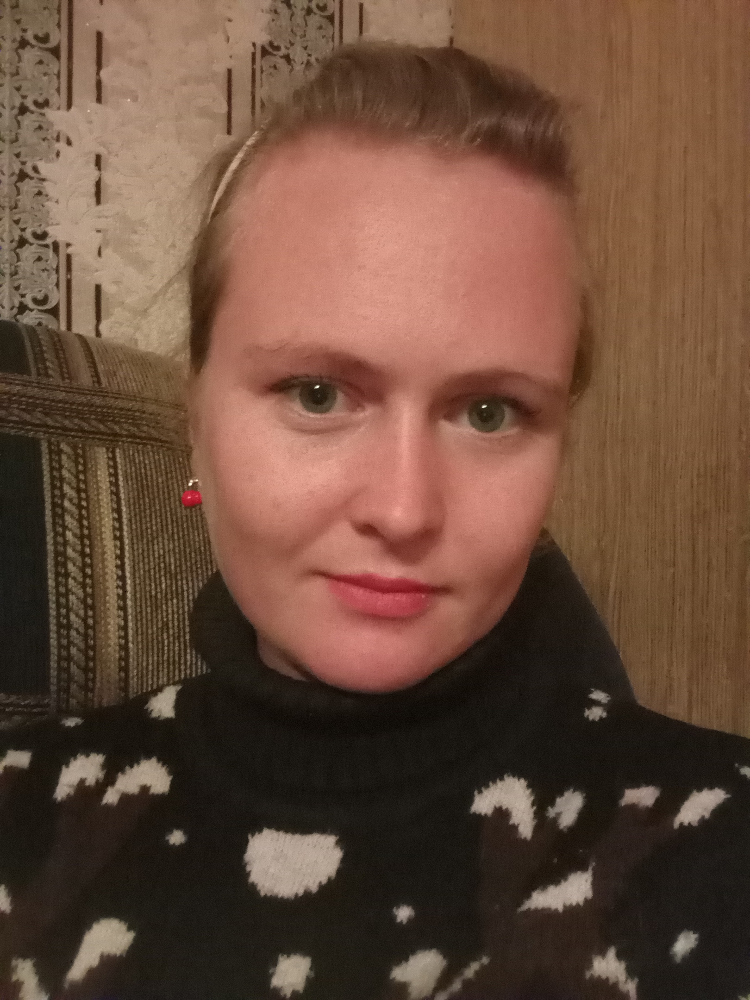

Kuznetsova Taisiya
I am active, initiative, but plodding, I learn quickly, love everything new, like to work in a team
Contacs
- phone number +375333067378
- email 27taya@mail.ru
- vk, inst tajkazajka
Purpose
I really want to learn how to program in JavaScript. I like the process of solving tasks and creating projects, as well as bonuses provided by the it sphere. At the moment, the main goal is to get a base for development in JS, in the future, I plan to finish another course on frameworks and start looking for a job as a developer.
Work experience
I graduated from Francisk Skorina Gomel State University as an accountant. After graduation, I worked as a chief accountant for a year and a half, and then went to support the 1C 8 program. Recently, I myself mastered programming 1C8 (OOP) and started working at the same time as the programmer (the last six months).
English level
My English level: А2.